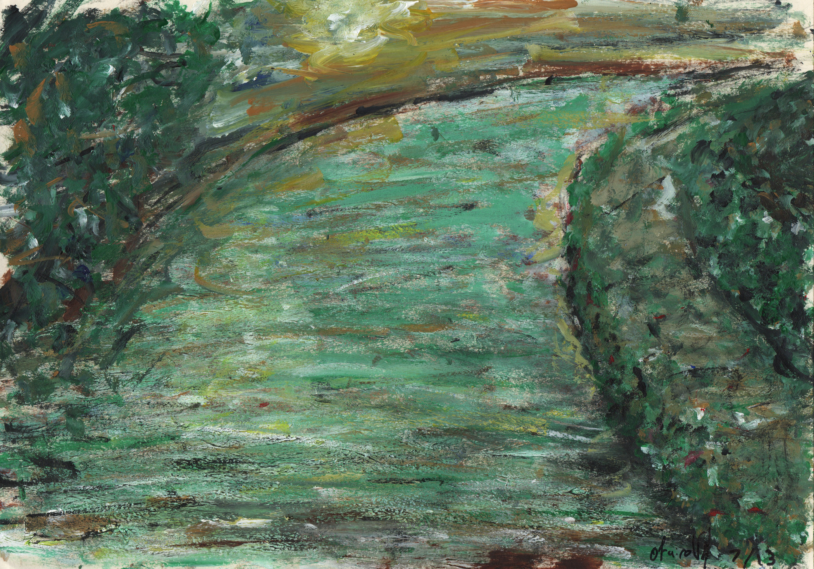

Hire Me
I am available for hire to build JavaScript, PHP or Node.js webapps.
Contact me: mail@oliverfaircliff.com or visit Dvbris.com
Python Text Games Engine
When I started learning Python I built lots of small text based games, and I always had a large amount of code I reused / improved each time I made one. After lots of improvement and learning I built this text based graphics engine for building small python terminal games. It uses sprites to display objects and handles all the collision detection and outputting. It also has a few classes included to make things like colours and input a bit less painful.
You can get the module and see some examples on the Github page.

Art
You can find some of my paintings on my DeviantArt account.
